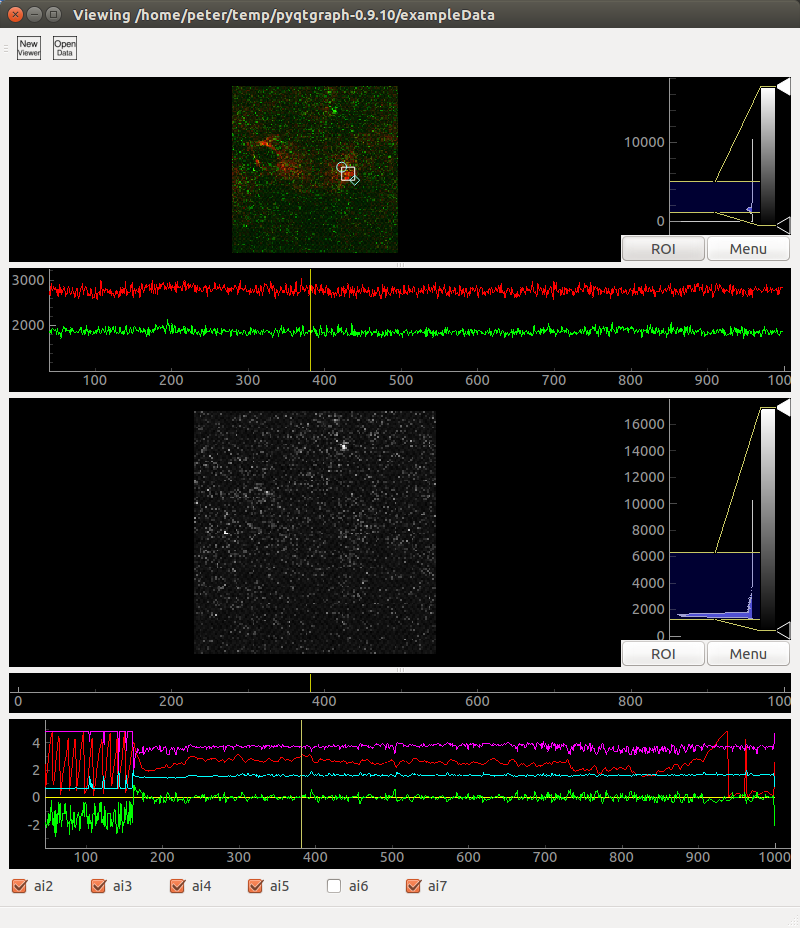

Purpose
This is a simple GUI for viewing data collected using ThorLabs 2-photon microscopes. After collecting imaging data with ThorImage and analog (e.g. electrophysiological) data with ThorSync, it is convenient to be able to quickly look at the signals. This script aims to ease this type of quick inspection of data. It does not replace more careful analysis and figure creation.
Installation
ThorViewer relies overwhelmingly on the excellent pyqtgraph library. First, download and unzip my slightly edited version of pyqtgraph here. Then download this project, and unzip it into the pyqtgraph directory. That's it!
Operation
At a command prompt, navigate to the pyqtgraph directory, type python view_thor_data.py, and a new viewer window should open. To open data from an experiment, click the "Open Data" icon (or File>Open File, or Ctrl+O) and navigate to the directory containing the .tiff files from ThorImage. This first time you open the .tiff files, it will save a .hdf5 called "t_series.hdf5" into the original data directory. It will also prompt you to navigate to the directory in which the ThorSync data is saved, which it will also copy to the data directory.
Screenshots
Authors and Contributors
Written by Peter Weir (@ptweir) in 2015 for use in Michael Dickinson's laboratory.